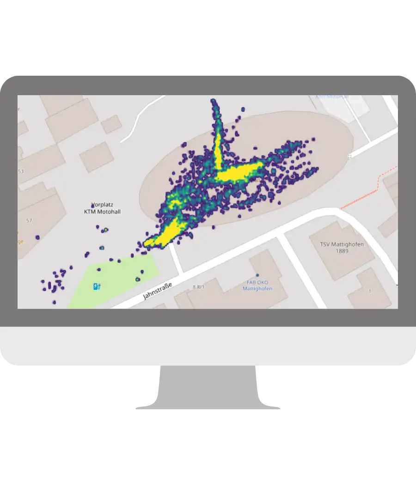

Système modulaire
Adapté aux sites accueillant plusieurs expositions simultanément, qu’elles soient permanentes ou temporaires.
Le système modulaire permet d’intégrer les parcours de visites de plusieurs expositions sur une même carte. Il peut également intégrer le système de visite guidée en tant que module séparé.
Chaque module peut intégrer les contenus multimédia énumérés sur cette page.
Sans frais supplémentaires
Lecteur audio avec contrôle de la vitesse
Les pistes audio seront lues dans un lecteur audio spécialement conçu et compatible avec tous les navigateurs.
En cliquant sur « play », les visiteurs pourront contrôler la vitesse de lecture, revenir en arrière ou avancer, ainsi que ralentir ou accélérer la lecture.
Sans frais supplémentaires
Mode hors ligne
En option, nous proposons un mode hors ligne optionnel afin que l'audioguide puisse être utilisé dans des zones où la connectivité réseau est faible ou inexistante. Notre mode hors ligne ne nécessite une connexion internet qu'au début de la visite, lorsque le code QR de la carte est scanné pour la première fois. Les pistes, les images et les cartes sont préchargées dans la mémoire du smartphone, ce qui permet aux visiteurs d'utiliser l'audioguide dans les zones mortes.
Notre mode hors ligne n'utilise pas uniquement la mise en cache ! Ce serait trop peu fiable. Et grâce à notre Service Worker, nos utilisateurs peuvent même scanner à nouveau le code QR dans une zone où il n'y a pas de couverture internet du tout et accéder à l'intégralité du guide audio comme s'ils utilisaient une application native.
payant
Bouton rétractable "Plus d'information"
Pertinent pour offrir aux publics un second niveau d’information, et pour aller plus loin sur une œuvre ou une thématique donnée.
Tous types de contenus peuvent être intégrés sous ce bouton déployable : fichiers audios, vidéos, images, documents PDF…
Sans frais supplémentaires
Filtre par centres d’intérêts
Adapté aux salons professionnels et aux audioguides avec un grand nombre de contenus.
Une fonctionnalité qui permet aux publics de filtrer le contenu de l’audioguide en fonction de leur sélection et de leurs préférences, avec l’aide de tags ou de mots-clés.
La liste des centres d’intérêts peut être modifiée à tout moment et le nombre de mots-clés est illimité.
Sans frais supplémentairesImages
Toutes les tailles et les formats d’images sont acceptés, notre CMS se charge de les adapter à l’audioguide.
Sans frais supplémentaires
Diaporama d’images
Vous pouvez intégrer jusqu'à 15 images dans ce diaporama !
Le diaporama est entièrement commandé par l'utilisateur.
En utilisant les sous-titres des images, vous pouvez montrer un développement chronologique.
Sans frais supplémentaires
Audio-slider
Notre audio-slider permet le glissement automatique des images au moment exact où la piste audio y fait référence.
Idéal pour illustrer des contextes historiques ou pour souligner des détails de la pièce exposée.
Contrairement aux vidéos, l'audio-slider de Nubart est compatible avec notre mode hors ligne.
payant
Images avant / après
Votre site a évolué au fil du temps ? Vous souhaitez partager l'évolution d'une fouille archéologique ? Montrer un tableau avant et après une restauration ?
Avec notre fonctionnalité avant/après, le visiteur peut constater ces évolutions en un clic. Un atout éducatif et pédagogique !
Sans frais supplémentaires
Vue panoramique interactive
Vous avez un belvédère avec une vue à couper le souffle ? Aidez vos visiteurs à reconnaître ce qu'ils voient.
La vue panoramique interactive en 3D permet d'identifier facilement les bâtiments et les caractéristiques géographiques. En cliquant sur les drapeaux, les visiteurs sont automatiquement dirigés vers les informations souhaitées. Il peut s'agir d'une piste audio, d'une vidéo, d'une image plus détaillée ou d'un simple texte.
Avec une interface permettant de passer de la vue de jour à la vue de nuit.
payantImages panoramiques 360°
Les images immersives permettent au visiteur de "se déplacer à l'intérieur" d'une représentation panoramique à 360° du site.
Sur de nombreux smartphones, l'image se déplace automatiquement, ce qui génère un impact visuel intéressant. Sur d'autres, l'utilisateur peut déplacer l'image à l'aide de l'écran tactile.
Sans frais supplémentaires
Objets 3D dynamiques
Nous pouvons ajouter vos images 3D à votre audioguide.
Par défaut, elles se déplacent automatiquement. Dès que l'utilisateur les déplace avec son doigt, il pourra voir l'objet sous tous les angles et même zoomer.
Sans frais supplémentaires
Vidéos
Vous pouvez nous envoyer des fichiers vidéo exclusifs ou confidentiels, ils seront chargés sur notre serveur privé. Ils ne seront disponibles que dans l'audioguide et ne pourront être partagés.
Nos vidéos peuvent être visualisées en format horizontal, vertical ou carré.
Sans frais supplémentaires
Bouton d'information
Parfois, un petit complément d'information peut s'avérer très utile. C'est pourquoi nous avons créé notre bouton d'information. Vous pouvez y placer, par exemple, les heures d'ouverture ou les coordonnées. Les numéros de téléphone ou les adresses e-mail sont cliquables.
La fenêtre pop-up disparaît automatiquement en touchant l'écran.
Sans frais supplémentaires
Transcriptions pour sourds et malentendants
Une icône vous donne accès à la transcription complète de la piste audio dans la langue correspondante.
Une fenêtre déroulante est alors affichée. En fermant la fenêtre, vous revenez à l'audioguide.
On peut également changer l'icône en un "i" et utiliser cette fonction pour fournir des informations textuelles étendues, comme alternative à notre bouton d'information.
Sans frais supplémentaires
Cartes interactives
Les cartes sont indispensables pour les tours de ville. Elles sont également utiles pour orienter le visiteur vers des points de repère ou vers des bâtiments à proximité de l'exposition.
Nous intégrons des cartes interactives avec la localisation du visiteur.
payant
Géo-scrolling
Nos pistes audio géolocalisées apparaissent en rouge et défilent automatiquement en haut de l'écran de votre smartphone lorsque vous vous approchez de l'exposition ou du site. Sur Android, ce processus est renforcé par une légère vibration du mobile.
Ainsi, votre visiteur sait toujours quelle piste écouter ensuite. Ils peuvent être cliqués de manière proactive pour activer une fonctionnalité non intrusive, ou ils peuvent démarrer en autoplay.
payant
Géo-tracking
Sur demande, nous recueillons les positions et les déplacements des utilisateurs d'audioguides de votre établissement. Ces informations peuvent être d'une importance stratégique, notamment dans le cadre d'itinéraires, de grandes installations et de marketing urbain. Les données récoltées sont anonymes et conformes au RGPD.
L'ensemble des données est consultable à tout moment via votre espace client protégé par un mot de passe.
Frais mensuels requis
Audioguides télécommandés
Nos clients peuvent contrôler leurs audioguides à distance depuis leur smartphone.
Lorsqu'il lance une piste audio, le guide l'envoie instantanément aux membres d'un groupe, dans la langue qu'ils ont préalablement choisie. Les pistes audio peuvent commencer à jouer automatiquement en autoplay.
Cette solution est idéale pour les visites en bateau, en bus, ou pour les sites dans lesquels une visite guidée est obligatoire. Elle s'adapte parfaitement au cas où tous les membres du groupe ne parlent pas la même langue que le guide.
payant
Bouton de téléchargement de fichiers
Vos visiteurs peuvent partager des fichiers avec votre musée. Par exemple, ils peuvent envoyer des documents historiques ou des photos de famille pour enrichir votre collection. Ou encore téléverser des photos pour participer à un concours lancé par votre musée.
Vous recevrez une notification chaque fois que quelqu'un téléversera un fichier. Les fichiers passent par un antivirus et sont déposés dans votre espace client pour que vous puissiez les consulter.
payant
Bouton de message vocal
Vos visiteurs peuvent enregistrer spontanément un message vocal pour votre musée. Ils peuvent, par exemple, apporter leur témoignage sur un événement historique.
Vous recevez une notification chaque fois que quelqu'un aura laissé un message vocal. Les enregistrements passent par un antivirus et sont déposés dans votre espace client pour que vous puissiez les consulter.
payant
Bouton de don
Nos audioguides contribuent aux revenus de nos clients par la revente des cartes non transférables, mais aussi à travers un bouton de don directement intégré à leur contenu numérique.
Il suffit de créer un bouton de don à partir d’u n compte PayPal ou d'un service similaire, et de faire parvenir à nos équipes le code généré.
Sans frais supplémentairesFormulaires d'abonnement
Envie d’inciter vos utilisateurs à s'abonner à votre newsletter ou de remplir un formulaire ?
Nubart applique une politique stricte en matière de données personnelles, pour autant, il est possible d'intégrer votre propre formulaire d'abonnement, à condition qu'il soit conforme au RGPD. De cette façon, les données privées de vos prospects restent chez vous !
Évidemment, nous pouvons intégrer aussi d'autres supports : images 3D de votre salle, écrans interactifs, etc.
Sans frais supplémentaires